QMX3.P36
本节介绍特定应用的房间操作员单元 QMX3.P36。
有关属性的说明，请参阅硬件目录中的“KNX PL-链接设备”一章。
Devices in the library
库中的设备代表具有特定应用程序设置的布局。库中设备的名称指的是其应用程序。
库的单位系统和所选的页面布局决定了温度显示的单位。
设备名称与库的单位系统无关。如果单位是设备名称的一部分，则仅使用 SI 单位。
库中包含以下设备：
姓名 | 所选页面布局的名称 |
|---|---|
Multi Page Layouts | |
ROpUn_QMX3.P36_GenHvac_Multi-page | M_SetC_0_allPages_01 |
Single Page Layouts | |
ROpUn_QMX3.P36_Fcu_FanSpd-SpTRAbs-HCSta-PscBtn | S_Set04_2_AbsTempSetpoint_FanSpeed_Occup_01 |
ROpUn_QMX3.P36_Fcu_FanSpd-SpTRRel,C-HCSta-PscBtn | S_Set04_7_RelTempSetpoint_FanSpeed_Occup_01 |
ROpUn_QMX3.P36_Fcu_FanSpd-SpTRRel,K-HCSta-PscBtn | S_Set04_7K_RelTempSetpoint_FanSpeed_Occup_01 |
ROpUn_QMX3.P36_Fcu_FanSpd-TR-SpTRRel,C-PscBtn | S_Set04_8_RoomTemp_RelTempSetpoint_FanSpeed_Occup_01 |
ROpUn_QMX3.P36_Fcu_FanSpd-TR-SpTRRel,K-PscBtn | S_Set04_8K_RoomTemp_RelTempSetpoint_FanSpeed_Occup_01 |
ROpUn_QMX3.P36_GenHvac_Single-page | S_Set01_0_RelTempSetpoint_RoomTemp_01 |
ROpUn_QMX3.P36_Rcg/Rad_SpTRAbs-HCSta-PscBtn | S_Set04_0_AbsTempSetpoint_Occup_01 |
ROpUn_QMX3.P36_Rcg/Rad_TR-SpTRRel,C-HCSta-PscBtn | S_Set04_1_RelTempSetpoint_Occup_01 |
ROpUn_QMX3.P36_Rcg/Rad_TR-SpTRRel,K | S_Set04_13K_RelTempSetpoint_01 |
ROpUn_QMX3.P36_Rcg/Rad_TR-SpTRRel,K-HCSta-PscBtn | S_Set04_4K_RelTempSetpoint_Occup_01 |
ROpUn_QMX3.P36_Vav/Fpb_RpdVnt-SpTRAbs-AQual-PscBtn | S_Set04_11_AQ_AbsTempSetpoint_RpdVent_Occup_01 |
ROpUn_QMX3.P36_Vav/Fpb_RpdVnt-SpTRAbs-HCSta-PscBtn | S_Set04_5_AbsTempSetpoint_RpdVent_Occup_01 |
ROpUn_QMX3.P36_Vav/Fpb_RpdVnt-SpTRRel,C-AQual-PscBtn | S_Set04_12_AQ_RelTempSetpoint_RpdVent_Occup_01 |
ROpUn_QMX3.P36_Vav/Fpb_RpdVnt-SpTRRel,C-HCSta-PscBtn | S_Set04_6_RelTempSetpoint_RpdVent_Occup_01 |
ROpUn_QMX3.P36_Vav/Fpb_RpdVnt-SpTRRel,K-AQual-PscBtn | S_Set04_12K_AQ_RelTempSetpoint_RpdVent_Occup_01 |
ROpUn_QMX3.P36_Vav/Fpb_RpdVnt-SpTRRel,K-HCSta-PscBtn | S_Set04_6K_RelTempSetpoint_RpdVent_Occup_01 |
ROpUn_QMX3.P36_Vav/Fpb_RpdVnt-TR-SpTRAbs-PscBtn | S_Set04_9_RoomTemp_AbsTempSetpoint_RpdVent_Occup_01 |
ROpUn_QMX3.P36_Vav/Fpb_RpdVnt-TR-SpTRRel,C-PscBtn | S_Set04_10_RoomTemp_RelTempSetpoint_RpdVent_Occup_01 |
ROpUn_QMX3.P36_Vav/Fpb_RpdVnt-TR-SpTRRel,K-PscBtn | S_Set04_10K_RoomTemp_RelTempSetpoint_RpdVent_Occup_01 |
Page Layouts
下表包含图书馆中 QMX3.P36 房间操作员单元的页面布局及其与适当应用程序功能的配合使用。图书馆的房间操作员单元已经包含适合应用程序的特定页面布局。预配置的布局可以在硬件和网络编辑器中更换为另一个布局。
Multi Page Layouts
姓名 | 应用 | 页数 | ||||
|---|---|---|---|---|---|---|
第1页 | 第2页 | 第3页 | 第4页 | 第5页 | ||
M_SetA_1_场景_ | Rad01、Ccg01、HCcg2Pipe01、HCcg4Pipe01、CcgRad01、Vav01 | 场景 | 设定点绝对温度，单位为 [°C] 或 [°F] 工厂状态（加热或冷却） | 设置 | （未使用） | （未使用） |
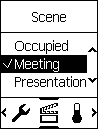 |
| 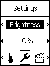 | ||||
M_SetA_3_场景_ | Rad01、Ccg01、HCcg2Pipe01、HCcg4Pipe01、CcgRad01、Vav01 | 场景 | 设定点绝对温度，单位为 [°C] 或 [°F] 工厂状态（加热或冷却） | 设置 | 房间模式 | （未使用） |
| 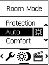 | |||||
M_SetA_4_场景_ | Rad01、Ccg01、HCcg2Pipe01、HCcg4Pipe01、CcgRad01、Vav01 | 场景 | [°C] 或 [°F] 中的相对温度设定点 Actual temperature in [°C] or [°F] | 环境 | 房间模式 | （未使用） |
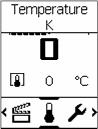 | ||||||
M_SetA_5_场景_ | Rad01、Ccg01、HCcg2Pipe01、HCcg4Pipe01、CcgRad01、Vav01 | 场景 | 设定点绝对温度，单位为 [°C] 或 [°F] 工厂状态（加热或冷却） | 设置 | 占用 | （未使用） |
| 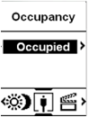 | |||||
M_SetA_20_场景_ | Rad01、Ccg01、HCcg2Pipe01、HCcg4Pipe01、CcgRad01、Vav01 | 场景 | [°C] 或 [°F] 中的相对温度设定点 Actual temperature in [°C] or [°F] | 设置 | 房间模式 | 日期 |
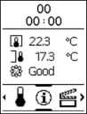 | ||||||
M_SetB_0_AbsTemp_ | 氟铜01 | 设定点绝对温度，单位为 [°C] 或 [°F] 工厂状态（加热或冷却） | Fan Speed | 设置 | （未使用） | （未使用） |
| ||||||
M_SetB_1_场景_ | 氟铜01 | 场景
| 设定点绝对温度，单位为 [°C] 或 [°F] 工厂状态（加热或冷却） | Fan Speed
| 设置
| （未使用） |
| ||||||
M_SetB_2_场景_ | 氟铜01 | 场景 | 设定点绝对温度，单位为 [°C] 或 [°F] 工厂状态（加热或冷却） | Fan Speed | 设置 | 房间模式 |
| ||||||
M_SetB_3_场景_ | Fcu01，快速通气 | 场景 | 设定点绝对温度，单位为 [°C] 或 [°F] 工厂状态（加热或冷却） | 快速通气 | 设置 | 房间模式 |
| 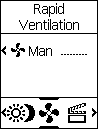 | |||||
M_SetB_4_RelTemp_ | 氟铜01 | [°C] 或 [°F] 中的设定点相对温度 Actual temperature in [°C] or [°F] | Fan Speed | 设置 | （未使用） | （未使用） |
M_SetB_5_场景_ | 氟铜01 | 场景
| [°C] 或 [°F] 中的设定点相对温度 Actual temperature in [°C] or [°F] | Fan Speed
| 设置
| （未使用） |
M_SetB_6_场景_ | 氟铜01 | 场景 | 设定点相对温度，单位为 [°C] 或 [°F] Actual temperature in [°C] or [°F] | Fan Speed | 设置 | 房间模式 |
M_SetB_7_场景_ | Fcu01，快速通气 | 场景 | [°C] 或 [°F] 中的设定点相对温度 Actual temperature in [°C] or [°F] | 快速通气 | 设置 | 房间模式 |
M_SetB_8_场景_ | 氟铜01 | 场景 | 设定点绝对温度，单位为 [°C] 或 [°F] 工厂状态（加热或冷却） | Fan Speed | 设置 | 占用 |
| ||||||
M_SetB_9_场景_ | Fcu01，快速通气 | 场景 | 设定点绝对温度，单位为 [°C] 或 [°F] 工厂状态（加热或冷却） | 快速通气 | 设置 | 占用 |
| ||||||
M_SetB_10_场景_ | Fcu01，快速通气 | 场景 | 设定点绝对温度，单位为 [°C] 或 [°F] 工厂状态（加热或冷却） | 快速通气 | 设置 | （未使用） |
| ||||||
M_SetB_11_场景_ | Rad01、Ccg01、HCcg2Pipe01、HCcg4Pipe01、CcgRad01、Vav01 | 场景 | [°C] 或 [°F] 中的相对温度设定点 Actual temperature in [°C] or [°F] | 设置
| （未使用） | （未使用） |
M_SetB_12_场景_ | Fcu01，快速通气 | 场景 | [°C] 或 [°F] 中的相对温度设定点 Actual temperature in [°C] or [°F] | 快速通气 | 设置 | （未使用） |
M_SetB_20_RelTemp_ | 氟铜01 | [°C] 或 [°F] 中的相对温度设定点 Actual temperature in [°C] or [°F] | Fan Speed | 设置 | 日期 | （未使用） |
M_SetC_0_allPages | - | 一个模板中的所有现有页面 信息页面：
| ||||

Single Page Layouts
姓名 | 应用 | 布局 | 线路 | |||
|---|---|---|---|---|---|---|
1号线 | 2号线 | 3号线 | 4号线 | |||
S_Set01_0_RelTempSetpoint_RoomTemp | Rad01、Ccg01、HCcg2Pipe01、HCcg4Pipe01、CcgRad01、Vav01 |
| Actual temperature in [°C] or [°F] | [°C] 或 [°F] 中的设定点相对温度 | （未使用） | （未使用） |
S_Set01_1_AbsTempSetpoint_OpMode | Rad01、Ccg01、HCcg2Pipe01、HCcg4Pipe01、CcgRad01、Vav01 |
| 工厂状态（加热或冷却） | 设定点绝对温度，单位为 [°C] 或 [°F] | （未使用） | 运行模式 |
S_Set01_4_AbsTempSetpoint_Scene | Rad01、Ccg01、HCcg2Pipe01、HCcg4Pipe01、CcgRad01、Vav01 |
| 工厂状态（加热或冷却） | 设定点绝对温度，单位为 [°C] 或 [°F] | （未使用） | 场景 |
S_Set01_5_RelTempSetpoint_OpMode | Rad01、Ccg01、HCcg2Pipe01、HCcg4Pipe01、CcgRad01、Vav01 |
| Actual temperature in [°C] or [°F] | [°C] 或 [°F] 中的设定点相对温度 | （未使用） | 运行模式 |
S_Set01_6_RelTempSetpoint_Scene | Rad01、Ccg01、HCcg2Pipe01、HCcg4Pipe01、CcgRad01、Vav01 |
| 工厂状态（加热或冷却） | [°C] 或 [°F] 中的设定点相对温度 | （未使用） | 场景 |
S_Set01_20_DateTime_RelTempSetpoint_ | Rad01、Ccg01、HCcg2Pipe01、HCcg4Pipe01、CcgRad01、Vav01 |
| 日期 | [°C] 或 [°F] 中的设定点相对温度 | Actual temperature in [°C] or [°F] | （未使用） |
S_Set02_0_AbsTempSetpoint_FanSpeed | 氟铜01 | 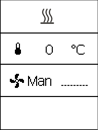 | 工厂状态（加热或冷却） | 设定点绝对温度，单位为 [°C] 或 [°F] | Fan Speed | （未使用） |
S_Set02_1_AbsTempSetpoint_FanSpeed_ | 氟铜01 | 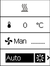 | 工厂状态（加热或冷却） | 设定点绝对温度，单位为 [°C] 或 [°F] | Fan Speed | 运行模式 |
S_Set02_4_AbsTempSetpoint_FanSpeed_ | 氟铜01 |
| 工厂状态（加热或冷却） | 设定点绝对温度，单位为 [°C] 或 [°F] | Fan Speed | 场景 |
S_Set02_5_RelTempSetpoint_FanSpeed | 氟铜01 | 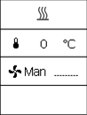 | 工厂状态（加热或冷却） | [°C] 或 [°F] 中的设定点相对温度 | Fan Speed | （未使用） |
S_Set02_6_RelTempSetpoint_FanSpeed_ | 氟铜01 |
| 工厂状态（加热或冷却） | [°C] 或 [°F] 中的设定点相对温度 | Fan Speed | 运行模式 |
S_Set02_7_RelTempSetpoint_FanSpeed_ | 氟铜01 | 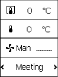 | Actual temperature in [°C] or [°F] | [°C] 或 [°F] 中的设定点相对温度 | Fan Speed | 场景 |
S_Set02_8_ActRoomTemp_RelTempSetpoint_FanSpeed | 氟铜01 | 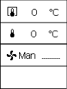 | Actual temperature in [°C] or [°F] | [°C] 或 [°F] 中的设定点相对温度 | Fan Speed | （未使用） |
S_Set02_20_日期时间_ | 氟铜01 |
| 日期 | [°C] 或 [°F] 中的设定点相对温度 | Actual temperature in [°C] or [°F] | Fan Speed |
S_Set03_0_AbsTempSetpoint_Prolongation | Rad01、Ccg01、HCcg2Pipe01、HCcg4Pipe01、CcgRad01、Vav01 | 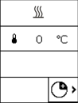 | 工厂状态（加热或冷却） | 设定点绝对温度，单位为 [°C] 或 [°F] | （未使用） | 延长 |
S_Set03_1_AbsRoomTemp_FanSpeed_ | Fcu01，快速通气 |
| 工厂状态（加热或冷却） | 设定点绝对温度，单位为 [°C] 或 [°F] | Fan Speed | 延长 |
S_Set03_2_RelTempSetpoint_Prolongation | Rad01、Ccg01、HCcg2Pipe01、HCcg4Pipe01、CcgRad01、Vav01 |
| 工厂状态（加热或冷却） | [°C] 或 [°F] 中的设定点相对温度 | （未使用） | 延长 |
S_Set03_3_RelTempSetpoint_FanSpeed_ | Fcu01，快速通气 | 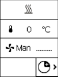 | 工厂状态（加热或冷却） | [°C] 或 [°F] 中的设定点相对温度 | Fan Speed | 延长 |
S_Set04_0_AbsTempSetpoint_Occup | Rad01、Ccg01、HCcg2Pipe01、HCcg4Pipe01、CcgRad01、Vav01 | 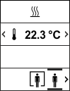 | 工厂状态（加热或冷却） | 设定点绝对温度，单位为 [°C] 或 [°F] | （未使用） | 占用 |
S_Set04_1_RelTempSetpoint_Occup | Rad01、Ccg01、HCcg2Pipe01、HCcg4Pipe01、CcgRad01、Vav01 | 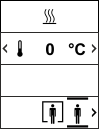 | 工厂状态（加热或冷却） | [°C] 或 [°F] 中的设定点相对温度 | （未使用） | 占用 |
S_Set04_2_AbsTempSetpoint_FanSpeed_ | Fcu01，快速通气 | 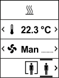 | 工厂状态（加热或冷却） | 设定点绝对温度，单位为 [°C] 或 [°F] | Fan Speed | 占用 |
S_Set04_3_RelTempSetpoint_FanSpeed_ | Fcu01，快速通气 |
| 工厂状态（加热或冷却） | [°C] 或 [°F] 中的设定点相对温度 | Fan Speed | 占用 |
S_Set04_4_AbsTempSetpoint | Rad01、Ccg01、HCcg2Pipe01、HCcg4Pipe01、CcgRad01、Vav01 | 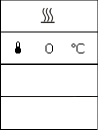 | 工厂状态（加热或冷却） | 设定点绝对温度，单位为 [°C] 或 [°F] | （未使用） | （未使用） |
S_Set04_4_RelTempSetpoint_Occup | 辐射、CCG | 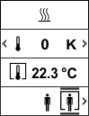 | 工厂状态（加热或冷却） | [°C] 或 [°F] 中的设定点相对温度 | Actual temperature in [°C] or [°F] | 占用 |
S_Set04_4K_RelTempSetpoint_Occup | 辐射、CCG | 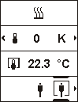 | 工厂状态（加热或冷却） | 设定点相对温度，单位为 [K] 或 [°F] | Actual temperature in [°C] or [°F] | 占用 |
S_Set04_5_AbsTempSetpoint_RpdVent_ | VAV |
| 工厂状态（加热或冷却） | 设定点绝对温度，单位为 [°C] 或 [°F] | 快速通气 | 占用 |
S_Set04_6_RelTempSetpoint_RpdVent_ | VAV |
| 工厂状态（加热或冷却） | [°C] 或 [°F] 中的设定点相对温度 | 快速通气 | 占用 |
S_Set04_6K_RelTempSetpoint_RpdVent_ | VAV |
| 工厂状态（加热或冷却） | 设定点相对温度，单位为 [K] 或 [°F] | 快速通气 | 占用 |
S_Set04_7_RelTempSetpoint_FanSpeed_ | FCU | 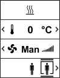 | 工厂状态（加热或冷却） | [°C] 或 [°F] 中的设定点相对温度 | Fan Speed | 占用 |
S_Set04_7K_RelTempSetpoint_FanSpeed_ | FCU | 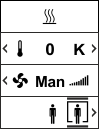 | 工厂状态（加热或冷却） | 设定点相对温度，单位为 [K] 或 [°F] | Fan Speed | 占用 |
S_Set04_8_RoomTemp_RelTempSetpoint_FanSpeed_ | FCU | 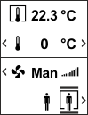 | Actual temperature in [°C] or [°F] | [°C] 或 [°F] 中的设定点相对温度 | Fan Speed | 占用 |
S_Set04_8K_RoomTemp_RelTempSetpoint_FanSpeed_ | FCU |
| Actual temperature in [°C] or [°F] | 设定点相对温度，单位为 [K] 或 [°F] | Fan Speed | 占用 |
S_Set04_9_RoomTemp_AbsTempSetpoint_RpdVent_ | VAV | 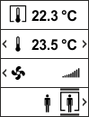 | Actual temperature in [°C] or [°F] | 设定点绝对温度，单位为 [°C] 或 [°F] | 快速通气 | 占用 |
S_Set04_10_RoomTemp_RelTempSetpoint_RpdVent_ | VAV |
| Actual temperature in [°C] or [°F] | [°C] 或 [°F] 中的设定点相对温度 | 快速通气 | 占用 |
S_Set04_10K_RoomTemp_RelTempSetpoint_RpdVent_ | VAV |
| Actual temperature in [°C] or [°F] | 设定点相对温度，单位为 [K] 或 [°F] | 快速通气 | 占用 |
S_Set04_11_AQ_AbsTempSetpoint_RpdVent_ | VAV | 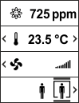 | 室内空气质量 | 设定点绝对温度，单位为 [°C] 或 [°F] | 快速通气 | 占用 |
S_Set04_12_AQ_RelTempSetpoint_RpdVent_ | VAV | 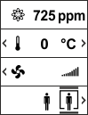 | 室内空气质量 | [°C] 或 [°F] 中的设定点相对温度 | 快速通气 | 占用 |
S_Set04_12K_AQ_RelTempSetpoint_RpdVent_ | VAV |
| 室内空气质量 | 设定点相对温度，单位为 [K] 或 [°F] | 快速通气 | 占用 |
S_Set04_13K_RelTempSetpoint | 辐射、CCG |
| （未使用） | 设定点相对温度，单位为 [K] 或 [°F] | （未使用） | （未使用） |
S_Set05_0_场景 | 唯一场景，会议室 | 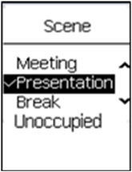 | 场景 | 场景名称 | ||